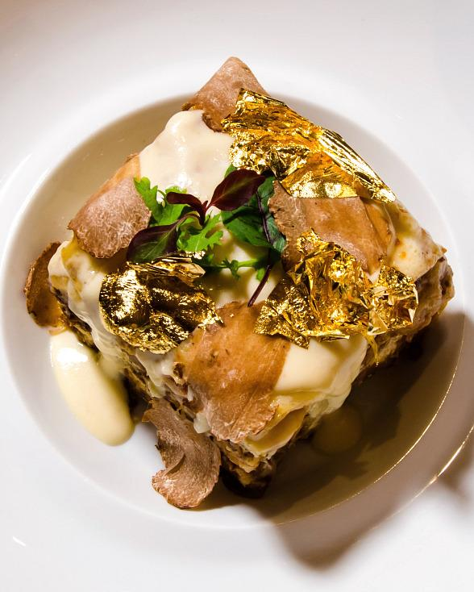

The Ultra-Swanky $100 'Diamond and Gold' Lasagna

layers of pasta stuffed with porcini mushrooms, Iberico ham and Prosciutto di Parma as well as 24-month-aged Parmigiano-Reggiano, buffalo mozzarella and Kobe Bolognese spread between each layer with a "foiefredo" sauce on top, an Alfredo sauce infused with foie gras
Ingredients:
- Lasagna Pasta
- Porcini mushrooms
- Iberico ham
- Prosciutto di Parma
- 24-month-aged Parmigiano-Reggiano
- Buffalo mozzarella
- Kobe Bolognese
- Foie gras
Steps:
- Start by making the sauce with ground beef, bell peppers, onions, and a combo of tomato sauce, tomato paste, and crushed tomatoes. The three kinds of tomatoes gives the sauce great depth of flavor
- Let this simmer while you boil the noodles and get the cheeses ready. We're using ricotta, shredded mozzarella, and parmesan -- like the mix of tomatoes, this 3-cheese blend gives the lasagna great flavor!
- From there, it's just an assembly job. A cup of meat sauce, a layer of noodles, more sauce, followed by a layer of cheese. Repeat until you have three layers and have used up all the ingredients
- Bake until bubbly and you're ready to eat!
Home